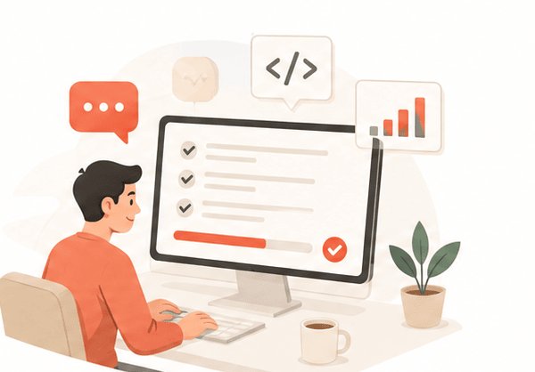

대화만으로 완성되는
9단계
개발 파이프라인
막막할 때 명령 한 번으로 — 비개발자도 체계적 가이드를 즉시 확보

/
development-pipeline
1
Schema
/ Terms
2
Convention
3
Mockup
4
API
5
Design
System
6
UI + API
7
SEO
/ Security
8
Review
9
Deployment
TIP
무조건 다 따르는 게 아니라 —
“bkit 9단계 개발론을 참고해 현재 프로젝트에 맞춰 진행”
하라고 하면 됩니다.